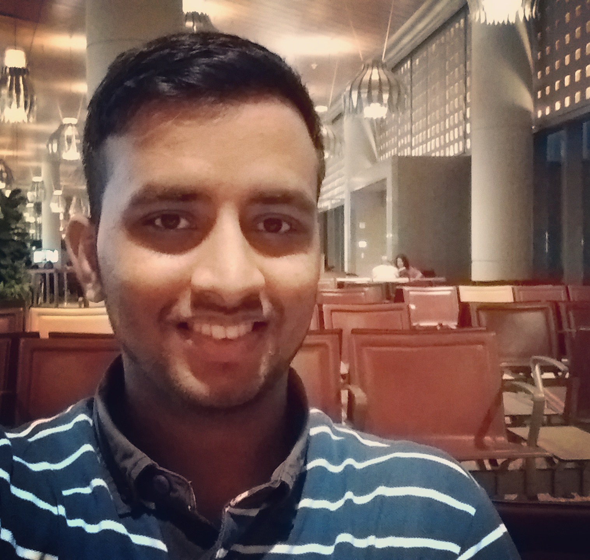

<div class="container-fluid ">
	<div class="row">

		<div class="col-md-4">
			
		</div>

		<div class="col-md-8 text-center">

			<blockquote>
  			<p>“It’s not who you are underneath, it's what you do that defines you” - from the movie <em>Batman begins</em></p>
			</blockquote>
			
			<p>	
			Welcome to my home on the Internet. This is where I shall showcase what I do and how that defines me. 
			First, let me introduce myself...

			<p>My name is Prateek Sappadla. I am currently pursuing my Master's in Computer Science from <a href="http://www.cs.nyu.edu/home/index.html">New York University</a>.
			I am expecting to graduate from NYU in May 2018. I am interested in Machine Learning, Deep learning and and their applications to Natural Language Processing and Computer Vision. 
			My other interests include Distributed Computing and Cloud computing. 
			</p>
			
			<p>Prior to starting my Master's, I worked as a Programmer Analyst at <a href="https://www.barclays.in/btci">Barclays Technology Centre India</a>. I was a part of 
			the Barclaycard US credit cards team and my responsibilities mainly involved developing web service APIs for the Transaction, Fraud Detection and Collection backend workflows.  
			</p>

			<p>I completed my Bachelors in Computer Science from <a href="http://www.bits-pilani.ac.in/goa/">BITS Pilani K.K. Birla Goa Campus</a>.</p> <!--Yes I studied in Goa (\M/) and no BITS Goa is not on a beach (there are beaches pretty close by :D)!</p>  

			<p>I was born in the city of <a href= "https://en.wikipedia.org/wiki/Hubli">Hubli</a> and my mother tongue is Kannada.  
			</p>	
			
			<p>I would describe myself as an introvert. My idea of a perfectly relaxed weekend would be lying alone or with a small group of family or friends on a beach or waterfront or a mountain top away from the hustle of the city 
			with enough books and beer to last me the weekend. I love reading if that wasn't made obvious from the above sentence :D. 

			When I am not busy with work or studies, I like to play soccer.  I follow European Soccer and my favorite team is Arsenal FC. I enjoy cooking Indian food.</p>	

			Harry Potter, FRIENDS, Seinfeld, Bollywood movies (Alia Bhat), Couchsurfing , Travel,Road trips, driving,  Hiking, (Rivers, lakes and mountains). 


			I am learning to play the guitar. If you have any tips or resources for learning the guitar, I would love to hear them. -->			
			</p>
		</div>
	</div>
</div>


